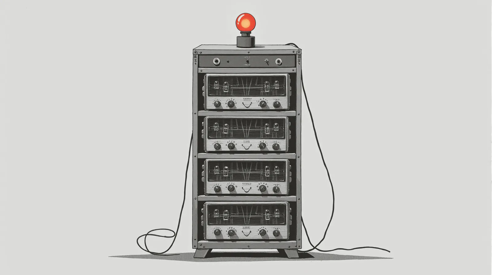
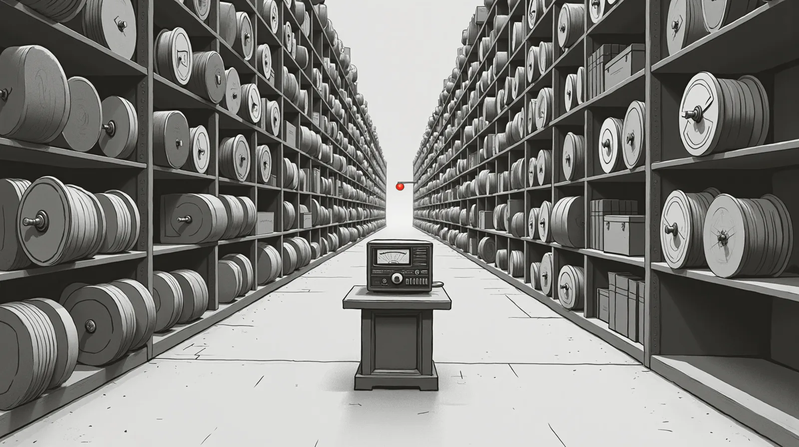
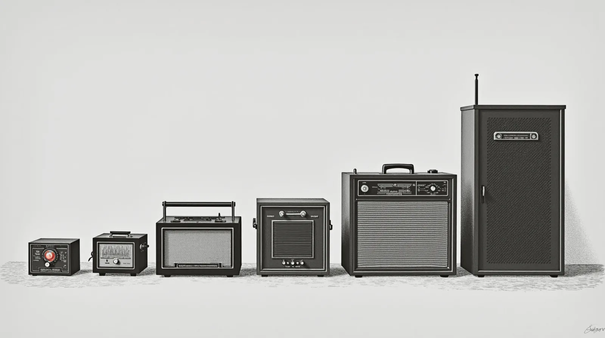
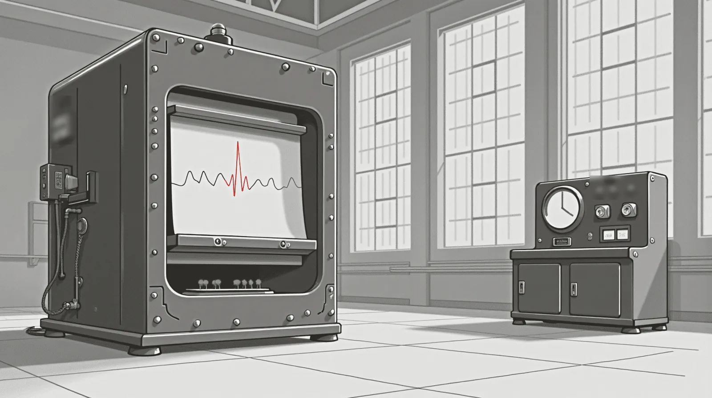
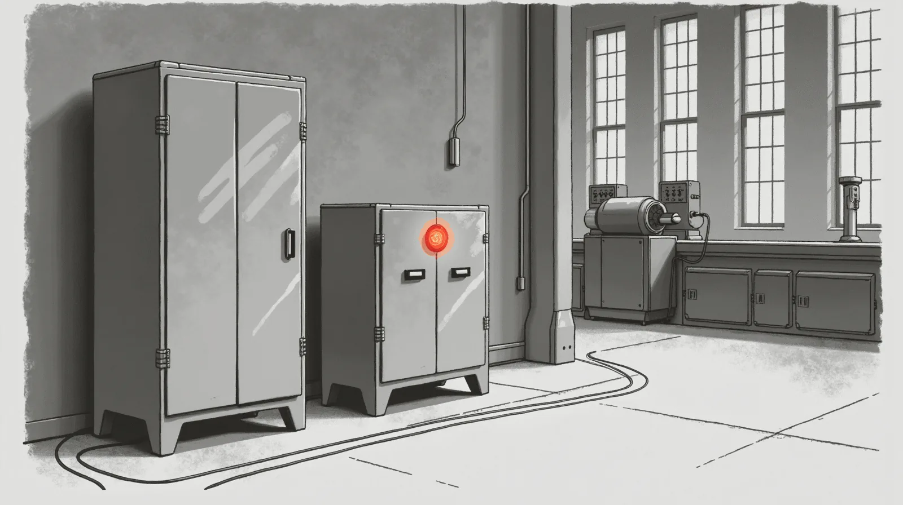

How LLMs actually work, in pictures.
One trick, repeated: guess the next piece of text. Here is the trick, how a model learns it, and why the same trick can learn the language of a machine.
Quick answer. A large language model predicts the next piece of text, one piece at a time. It learns that by guessing its way through a vast pile of text and nudging billions of internal settings a little after each round of guesses. Further training on examples, and on which answers people prefer, turns that autocomplete into an assistant.
A reader asked the plainest question there is: how an LLM actually works. The answer fits in one sentence and a dozen pictures. Follow one sentence through the machine.
What does an LLM actually do?
One thing. Given the text so far, it scores every piece it knows and picks a likely one. It adds that piece and does it again. A whole answer is this loop, run a few hundred times.
Drag the needle through five steps. The bars rank every candidate for the next piece. At step 4 the model took the third bar: sampling sometimes picks a lower bar, and a setting called temperature says how often.
-
Step 1
Theoperatorkeyedthemicand
took the top bar -
Step 2
Theoperatorkeyedthemicandsaid
took the top bar -
Step 3
Theoperatorkeyedthemicandsaidroger
took the top bar -
Step 4
Theoperatorkeyedthemicandsaidrogerthat
sampled the third bar -
Step 5
Theoperatorkeyedthemicandsaidrogerthat.
took the top bar
The pieces are tokens: whole words, parts of words, punctuation, fragments of numbers. A model knows a fixed set of them, usually tens of thousands to a few hundred thousand.
- A sentence
The operator keyed the mic.
- A long word
unbelievable
- A part number
BRG-6205-2RS
- A log line
14:02:11 pump_3 WARN temp high
- A sensor reading
pump_3 temp 71.2 rpm 1480 vib 0.21
How does it know what words mean?
Each piece becomes a long list of numbers, its embedding: a position on a map with thousands of directions. Pieces used in similar places end up near each other. Nobody draws this map. It falls out of predicting the next piece.
Drag from untrained to trained and watch the words sort themselves. Point at a word, or tab to it, to light its neighbours.
- Untrainedrandom positions
- Halfwaygroups forming
- Trainedsorted by use
How does it keep track of what you said?
Before each guess, every piece looks back at the pieces before it and weighs which ones matter now. This step is attention, the heart of the transformer. Stacked a few dozen layers deep, it follows a thread through pages.
Drag the needle along the sentence. Each word looks back differently. “It” leans on “pump”.
- The
- pump
- hummed,
- then
- it
- stopped
Why are there so many layers?
One round of looking back is shallow. A model stacks dozens of them, and each layer reads what the one below it wrote. Roughly: low layers tend to settle spelling and grammar, and higher layers tend to hold facts and plan the answer.

How does an LLM get trained?
A new model is billions of settings set at random, so its first guesses are static. Show it a real sentence with the next piece hidden. Let it guess, measure the miss (the loss), and nudge every setting a hair toward less wrong. Repeat over trillions of pieces.
Drag the needle through training. The error falls, the static clears, and the same sentence comes out right. The lower curve is a small model on one machine’s readings: a narrow stream, learned faster and closer to the floor.
-
Step 0
guess
kq#v
· answerroger
Pure static -
Early
guess
the
· answerroger
Common pieces -
Later
guess
that
· answerroger
Grammar -
Much later
guess
over
· answerroger
On topic -
Trained
guess
roger
· answerroger
A clear signal
Why does a chatbot answer you instead of just continuing your text?
It goes to school three times. The first teaches it language. The other two teach it the job and its manners.

- Pretraining. Predict the next piece across a huge library of text. Out comes a model that continues any document, but does not reliably answer you.
- Instruction tuning. Thousands of examples of a request and a good reply. Now it answers instead of rambling on.
- Preference tuning. People compare two replies and pick the better one. The model is nudged toward their pick.
How big does a model need to be?
As big as the job. The best general models run to hundreds of billions of settings and a data centre. A model that knows one machine’s language needs a few hundred million and a board the size of a hand. Quantization, storing each setting in fewer bits, shrinks either one further.

Can the same trick read machine data?
Yes. A machine talks all day in readings, status codes and log lines. That stream has a grammar. A motor draws current before it warms. A valve opens, then the pressure moves. Cut the stream into pieces and train a model to predict the next reading. It learns what normal sounds like. A model built for the stream keeps 71.2 as one piece.
Drag the needle to inject a fault. The next reading lands outside what the model expected. That surprise is a score, and the score crosses a line.
- Normalsurprise 0.1
- Driftsurprise 0.4
- Faultsurprise 0.9, over the line
- Settlessurprise 0.2
A big web model and a small plant model can both guess the next reading. The small one has only ever heard this machine, so its guess is sharper. Sharper guesses make smaller surprises on normal days and louder ones on bad days.
How is RogerAI pushing the boundary for machines?
Most of the field races to the largest model. We work the other end. The question is how small a model can be and still read a machine well.

- Trained on the machine’s language. Our small tiers start from nothing and read telemetry, log lines and serial dumps, not the web. The plant’s vocabulary is the only one they learn.
- The next reading. The core skill is the same trick as this whole page: predict what comes next. A miss is a signal, and a confident miss is an alarm.
- Measured numbers. The numbers we publish sit on the Wave family page, with the benchmark each came from. Our smallest tiers score at chance on general benchmarks, on purpose.
- A spectrum, not a single model. Each tier is sized for a job. A Pico reads one machine. A Nano rolls up many Picos. Bigger tiers reason across a site and talk to the people who run it.
- A read it cannot make goes up. When a small tier is unsure, it sends the read to the tier above instead of guessing. Both speak the same machine vocabulary, so nothing is translated on the way.
- It runs where the machine is. On the board beside it, offline, built to answer in tens of milliseconds, beside the control system and never in place of it.

What we do not claim
No Wave tier controls a machine, opens a valve or trips a breaker.
None of them guarantees it will catch a fault. A model that flags a
surprise is an adviser, and a person or the control system decides.
Where we stand today, from our own ledger: Wave Pico is on air, which
means A gated artifact is served as a band on the network; its
weights are not published.
Wave Nano is gated, which means A built artifact has passed our own release gate; it is not on air and no checkpoint is public.
What to ask any vendor
- “What did the model read during training: the web, or data like mine?”
- “Where does it run, and does it keep working with the network unplugged?”
- “What does it do when it is not sure?”
- “Which numbers are measured on a public benchmark, and which are claims?”
- “What can it change on the machine?” The right answer is nothing.
What do people get wrong about LLMs?
- “It looks things up.” No. What it learned is spread across its settings. That is why it can sound sure and still be wrong.
- “It memorized the internet.” Its settings are far smaller than the text it read. It learned mostly patterns, not pages.
- “It is a person.” It is a predictor. Predicting well forces it to model a lot about the world, but there is no one behind the words.
- “Bigger is always better.” For one narrow job, a small specialist trained on the right data often wins.
What do the words on this page mean?
- Token
- A piece of text the model reads and writes: a word, part of a word, punctuation.
- Vocabulary
- The fixed set of tokens a model knows.
- Embedding
- The list of numbers that places a token on the map of meaning.
- Attention
- The step where each piece weighs the earlier pieces that matter now.
- Transformer
- The design that stacks attention layers; the architecture of today’s LLMs.
- Layer
- One round of attention and arithmetic; models stack dozens.
- Parameters
- The settings training nudges; counted in millions or billions.
- Loss
- The measured miss between a guess and the answer; training pushes it down.
- Pretraining
- School one: next-piece prediction over a huge library.
- Temperature
- A setting for how often sampling takes a lower bar.
- Quantization
- Storing each setting in fewer bits, so the model takes less memory.
- Surprise
- How far a real reading lands from what the model expected; the anomaly score.
Questions people actually ask
- What is a token in an LLM?
- A piece of text the model reads and writes: a whole word, part of a word, a number fragment or punctuation. A model works with a fixed vocabulary of them, usually tens of thousands to a few hundred thousand, and writes its answer one token at a time.
- Does an LLM look things up on the internet?
- Not by itself. A plain model answers from patterns stored in its settings during training. Some apps give it a search tool and paste the results into its context, which is a separate step around the model.
- Why do LLMs make things up?
- Because they are trained to produce a likely next piece, not a checked fact. When the pattern is weak, a fluent guess still comes out. Grounding it in real documents and asking it to cite them helps.
- How long does it take to train an LLM?
- The largest models train for weeks to months on thousands of GPUs. A small specialist model, trained on one narrow kind of data, can be trained on far less hardware.
- Can I run an LLM on my own computer?
- Yes. Smaller open models run on a laptop or a gaming GPU, and quantized versions shrink them further. Our VRAM guide shows what fits on which card, and RogerAI lets you reach bigger models other people share.
- Why train a model on manufacturing data instead of using a chatbot?
- A machine's readings are a language of their own, and a model trained on them learns what normal sounds like for that machine. It can be small enough to run on site, offline, as an adviser beside the control system rather than in place of it.